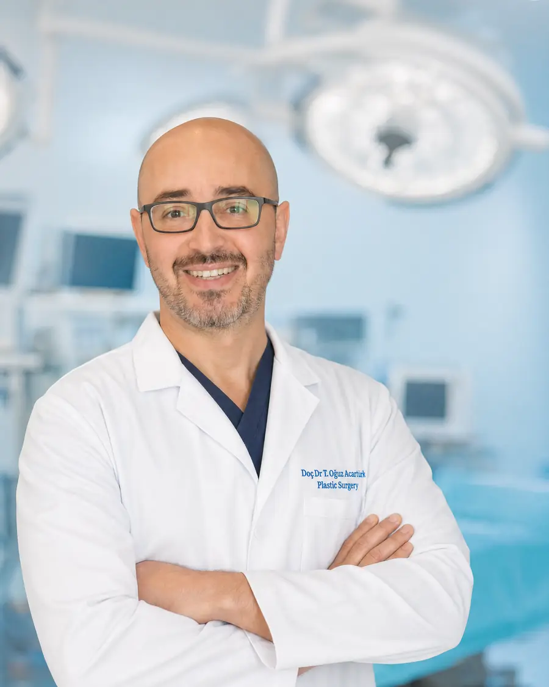

Rekonstrüktif Cerrahi
Bacak ve ayak onarımı (alt ekstremite rekonstrüksiyonu)
Trafik kazası, iş kazası ya da ateşli silah yaralanması sonrası bacakta kemiği, plağı veya tendonu açıkta bırakan yaralar; ayrıca aylarca kapanmayan kronik yaralar, sağlıklı ve damarlı doku ile örtülmedikçe iyileşmez. Bu doku, gerektiğinde vücudun başka bir bölgesinden mikrocerrahi ile getirilir.
Yazan ve tıbbi olarak inceleyen: Doç. Dr. Tahsin Oğuz Acartürk — Plastik, Rekonstrüktif ve Estetik Cerrahi; Pittsburgh Üniversitesi. Son güncelleme:
Kimlere uygulanır?
- Kaza sonrası açık kırık, kemiği veya plağı açıkta kalan yaralar
- Ortopedik ameliyat sonrası açılan, kapanmayan yaralar
- Aylardır iyileşmeyen kronik bacak ve ayak yaraları
- Kemik enfeksiyonu (osteomiyelit) sonrası temizlenen alanların örtülmesi
- Topuk ve ayak tabanı gibi yük taşıyan bölgelerdeki doku kayıpları
- Tümör çıkarımı sonrası oluşan doku ve kemik eksiklikleri
Bacağın alt üçte birinde ve ayakta deri altı doku incedir; burada açıkta kalan kemik ya da plak, basit dikiş veya deri yamasıyla güvenli biçimde örtülemez.
Onarım seçenekleri
Lokal flepler
Küçük ve orta büyüklükteki defektlerde, yakındaki sağlıklı doku kan akımı korunarak kaydırılır.
Serbest doku aktarımı (mikrocerrahi)
Geniş defektlerde uyluk (anterolateral uyluk flebi), sırt veya karın bölgesinden alınan doku, damarlarıyla birlikte bacağa taşınır ve mikroskop altında bacak damarlarına bağlanır.
Kemik aktarımı
Kemik kaybı olan olgularda fibula gibi damarlı kemik aktarımı planlanabilir.
Açık kırıklarda doku örtüsünün zamanında sağlanması enfeksiyon ve kaynamama riskini etkiler. Bu nedenle ortopedi ve plastik cerrahi ekiplerinin erken dönemde birlikte planlama yapması önemlidir.
Ameliyat ve iyileşme
- 1. ADIM — HAZIRLIKYaranın temizlenmesi, enfeksiyonun kontrolü ve ortopedi ekibiyle ortak plan.
- 2. ADIM — AMELİYATUygun flebin hazırlanması ve defektin örtülmesi; serbest doku aktarımında damarların mikroskop altında bağlanması.
- 3. ADIM — İLK GÜNLERAktarılan dokunun dolaşımının yakından izlenmesi, bacağın yüksekte tutulması.
- 4. ADIM — KADEMELİ YÜKLENMEBacağın sarkıtılmasına ve basmaya ekibin önerdiği takvimle, aşamalı olarak geçilir.
- 5. ADIM — REHABİLİTASYONFizyoterapi, ödem kontrolü ve gerekirse ikincil incelteme/şekillendirme işlemleri.
Videolar
Doç. Dr. Acartürk Anlatıyor
Kapağa dokunun, video bu sayfada oynar.
 Açık bacak kırığı sonrası damar onarımı
Açık bacak kırığı sonrası damar onarımıSık sorulan sorular
İzmir'de kapanmayan bacak yarası veya açık kırık için hangi doktora gidilir?
Kırığın tedavisi ortopedinin, açıkta kalan kemik ve doku kaybının örtülmesi ise plastik ve rekonstrüktif cerrahinin alanıdır; en iyi sonuç iki ekibin birlikte çalışmasıyla alınır. Doç. Dr. Tahsin Oğuz Acartürk, İzmir Bayraklı'da mikrocerrahi ile serbest doku aktarımı gerektiren bacak ve ayak onarımlarını yapmaktadır.
Doku alınan bölgede sorun olur mu?
Verici bölge, işlevi en az etkilenecek şekilde seçilir. Uyluk gibi bölgelerden alınan dokunun yeri genellikle doğrudan kapatılır; geniş alımlarda deri grefti gerekebilir.
Ameliyattan sonra ne zaman yürüyebilirim?
Aktarılan dokunun bacak sarkıtılmasına alışması için kademeli bir program uygulanır. Basma zamanı, kırığın durumuna göre ortopedi ekibiyle birlikte belirlenir.
Şeker hastalığına bağlı ayak yaralarında da yapılır mı?
Uygun damar durumuna sahip seçilmiş hastalarda yapılabilir. Önce damar değerlendirmesi, kan şekeri kontrolü ve enfeksiyonun tedavisi gerekir.
Aktarılan doku zamanla şeklini alır mı?
İlk dönemde hacimli görünebilir. Ödem çözüldükçe incelir; gerekirse aylar sonra küçük bir düzeltme işlemiyle çevre dokuyla uyumu artırılır.
Kaynaklar
Bu sayfadaki tıbbi bilgiler aşağıdaki kaynaklara dayanmaktadır.
Doç. Dr. Tahsin Oğuz Acartürk
Plastik, Rekonstrüktif ve Estetik Cerrahi · Ağız, Yüz ve Çene Cerrahisi · Pittsburgh Üniversitesi

Bu alandaki deneyimi: Bacak ve ayaktaki doku kayıplarının onarımı, çoğu zaman vücudun başka bir bölgesinden damarlarıyla birlikte doku aktarımını (serbest flep) gerektirir. Doç. Dr. Acartürk, Pittsburgh Üniversitesi kökenli mikrocerrahi deneyimiyle 600'ün üzerinde mikrocerrahi vaka gerçekleştirmiştir.
- 600+ mikrocerrahi vaka
- Pittsburgh Üniversitesi Plastik Cerrahi — mikrocerrahi
- Serbest doku aktarımı ve damar-sinir onarımı
Değerlendirme ve ikinci görüş
Yaranın fotoğraflarını, kırık ve ameliyat bilgilerinizi ve varsa görüntülemelerinizi gönderin. Ortopedi ekibinizle koordinasyon için size dönüş yapılır.